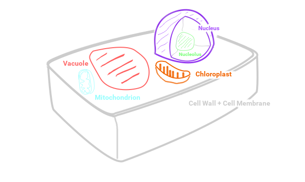

Plant cells are eukaryotic cells, meaning that they contain their genetic information within a separate membrane, called the nucleus. They also preform cellular respiration inside their mitochondria, in order to use the energy stored in food. Plant cells have a thick cell wall made of cellulose and are filled with chloroplasts to preform photosynthesis. Plant cells have a central vacuole that is even larger than the nucleus.
The cell wall of a plant cell is made of cellulose, or fiber. It is hard and rigd and helps the cell, and the organism as a whole, keep its form as well as protecting it from outside danger to the cell.
The cell membrane is a phospholipid bilayer. It is made of phospholipids, which have one hydrophobic end and one hydrophilic end. There are two layers of these. The hydrophobic ends point towards eachother and the hydrophilic ends point away from the membrane.
The cytoplasm is the liquid inside of the cell, in the space between the organelles. It is mostly water, but contains some nutrients and ions for the cell's use. The cytoplasm also contains ATP molecules so that proteins can just use them whenever they need one. The ADP that remains is also floating around in the cytoplasm.
Chloroplasts are where photosynthesis happens. They are green because of the chlorophyl inside them.
Stroma are stacks of several thylakoids stuck together. Ther are usually several stroma in a chloroplast. They are also green because of the same reason as the chloroplasts.
Thylakoids are also green. In and around them is where photosynthesis happens. Their membrane is used during photosynthesis.
Mitochondria are organelles that are common to all eukaryotes. They are the "powerhouses" of the cell. They preform cellular respiration and produce ATP for the cell to use. Mitochondria are made up of two phospholipid bilayers, the same kind of membrane as the one around the whole cell. There is one outer membrane, separating the organelle from the rest of the cell, and one inner membrane, used for cellular respiration. The inner membrane has folds, as can be seen above, to maximize surface area. The space inside of the inner membrane is called the matrix. The matrix is full of ribosomes, matrix granules, and proteins used for cellular respiration. Mitochondria have their own DNA, which is also stored in the matrix. This is because originally, mitochondria were separate organisms. They were bacteria, living in the ocean. Then they started living inside of eukaryotic cells, which is why they have a double membrane, and eventually stopped being an individual organism of their own and became an organelle in eukaryotic cells. Mitochondrial DNA is passed down only from your mother, since sperm do not contain mitochondria. The amount of mitochondria in a cell varies from just a few to a few thousand.
The central vacuole contains material and waste. It also keeps the cell under pressure so it can retain its structure.
The nucleus is where all the genetic code is stored. It is separated by a membrane from the rest of the cell.
The nuclear membrane is a phospholipid membrane. It has nuclear pores on it, which are used to transport things in and out of the nucleus.
All the DNA in the nucleus tends to bunch up in the middle, leaving some extra space between the DNA and the nuclear membrane. This bunched up ball of DNA in the center of the nucleus is called the nucleolus.
Ribosomes are the cell's protein factory. They use mRNA and tRNA to construct proteins. They are usually near the nucleus in the rough ER, but they can be anywhere.
The endoplasmic Reticulum, or ER for short, is a flat, folded up, membrane-enclosed sac of fluid. The rough and smooth ER serve different purposes. See the diagram at the top of the page for a visualization. Not all cells have ERs, but the huge majority do.
The rough ER is called the rough ER because it is covered in ribosomes. When a free ribosome starts synthesizing proteins, it is attached to the rough ER so the protein can be more easily transported after it is made.
The smooth ER manufactures lipids, hormones, and filters the cytoplasm of any toxins.
The golgi apparatus packages proteins into membrane-enclosed vesicles for transport.
Microtubules are filament-like structures made of tubulin. They play a role during cellular division in pushing the two dividing cells apart.
Centrioles are cylindrical structures also made of tubulin. They form part of a centrosome which also play a role in cell division.